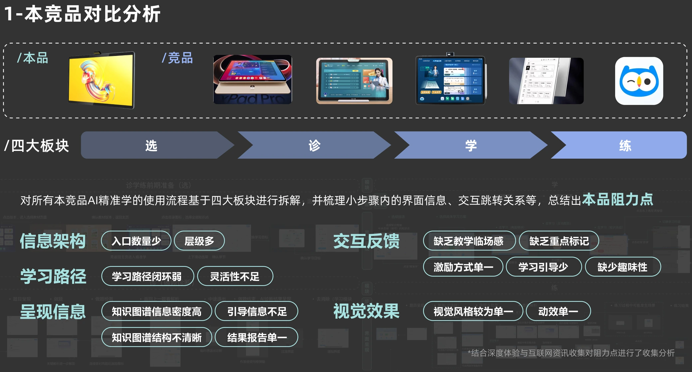
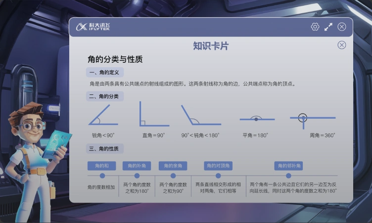
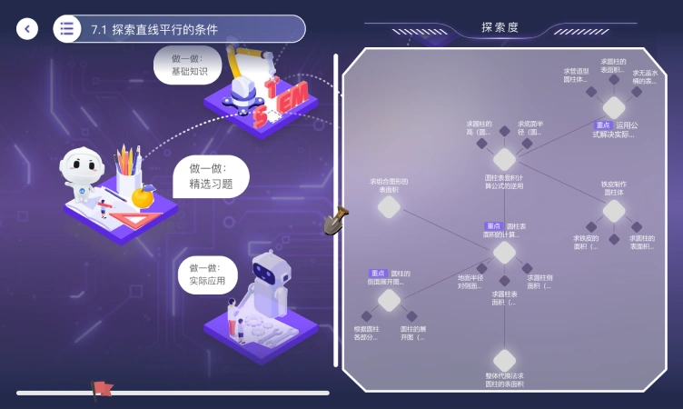

iFLYTEK · Learning product
Designing for sustained learning
Turning student motivations and barriers into visible progress and game-based incentives.
The team delivered 50+ screens and a high-fidelity prototype.

iFLYTEK AI Learning · Student support
How does a stuck student ask Xiaofei for help?

Forgotten a concept?
Where is the student stuck?
The exercise gives EF ∥ AD, but the student cannot justify why two angles are equal. Call the companion at the edge of the exercise.
Let the student name the difficulty
The original design opens a rounded conversation panel over the exercise. Keeping the diagram in view lets the student ask about a specific step.
Offer a clue and leave the reasoning to the student
Xiaofei points back to the parallel lines. The student can try the proof again or ask for a more specific hint.
Narrow the hint to two points
The follow-up identifies E and A and invites a comparison. The student decides when to leave the conversation.
Pick up at the same line of the proof
Closing the panel returns to the same diagram. The student can trace BA and supply the reason for the equality.
Design decision
The original product offered fixed hints on selected problems. A companion gives the student a way to initiate help. The design also includes a separate invitation after inactivity, which the student can decline.
What to check in a walkthrough
Give a student the same problem. Observe separately whether they can find help, articulate the blocked step, and resume their proof after closing the dialogue.
Design approach
After completing a task, how can students tell what progress they have made and what to do next?
- Identify motivators and barriersReview interviews and competitor learning flows
- Identify where feedback mattersOrganise the experience around goals, tasks, progress, and feedback
- Create a prototype for discussionTurn growth themes and learning feedback into concrete screens
Focus the problem through interviews
As a core member of this university–industry project, I took part in 20+ user interviews and reviewed 15+ competitor workflows. After mapping what encouraged or discouraged continued learning, I focused on task feedback: could students understand their progress and see a clear next step?
What motivates students and what interrupts learning
The team combined interviews, a literature review, and product comparisons. For motivation, we surveyed seven gamified products and studied three in depth. For friction, we mapped the existing product and five core competitors across four stages: select, diagnose, learn, and practise. We also grouped findings from more than 20 interviews.


How the findings shaped the learning journey
| Research finding | Design rationale | Where it appears |
|---|---|---|
| Few entry points and deep navigation made the original learning path hard to adapt. | Organise the experience into warm-up, preview, and review, with the appropriate diagnosis, learning, or practice steps in each. | Use the revised flow to show how students move between tasks and stages. |
| Limited guidance and repetitive incentives left students needing clearer goals and feedback along the way. | Use the co-design workshop to map goals, tasks, the learning process, and feedback to distinct moments. | Show progress through the growth theme and place companion interactions and rewards along the journey. |
Build feedback into the learning journey
I led a cross-functional workshop that brought research findings into four moments: goals, tasks, progress, and feedback. The growth theme made cumulative progress visible, while rewards and a digital companion gave students feedback as they worked through tasks.
- What the interface needs to answer
- After seeing the feedback, students should be able to say what they have completed, where they are in the process, and what they can do next.


Prototype deliverables
The team delivered over 50 screens and high-fidelity prototypes. These six original screens follow the work a student does, from identifying a concept and consulting the textbook to explaining a solution.








Progress and rankings